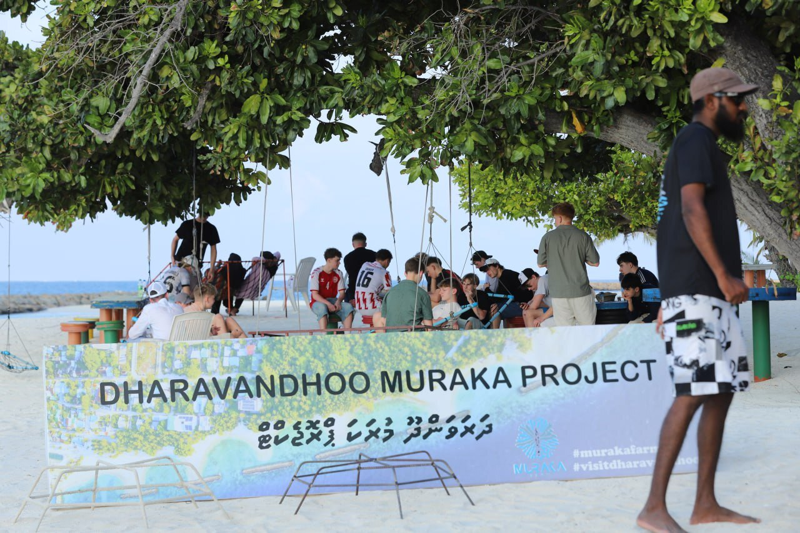
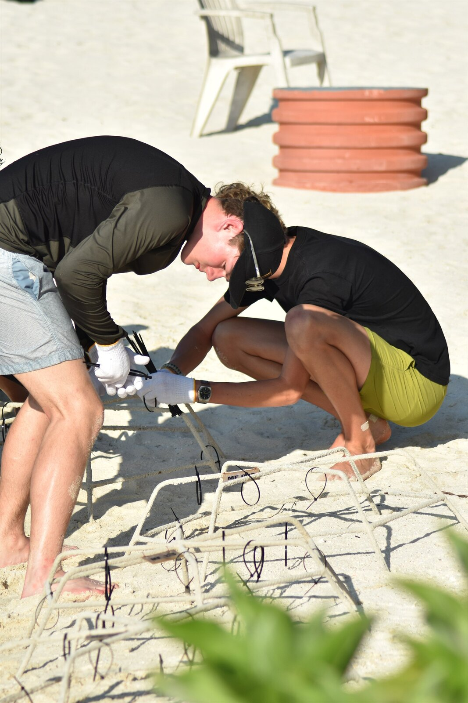
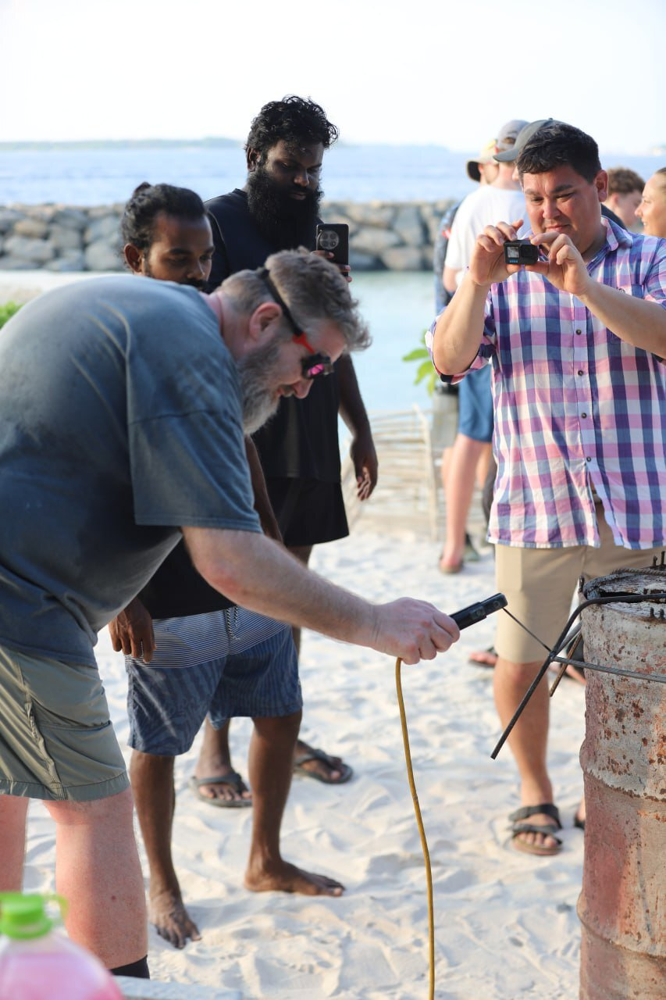
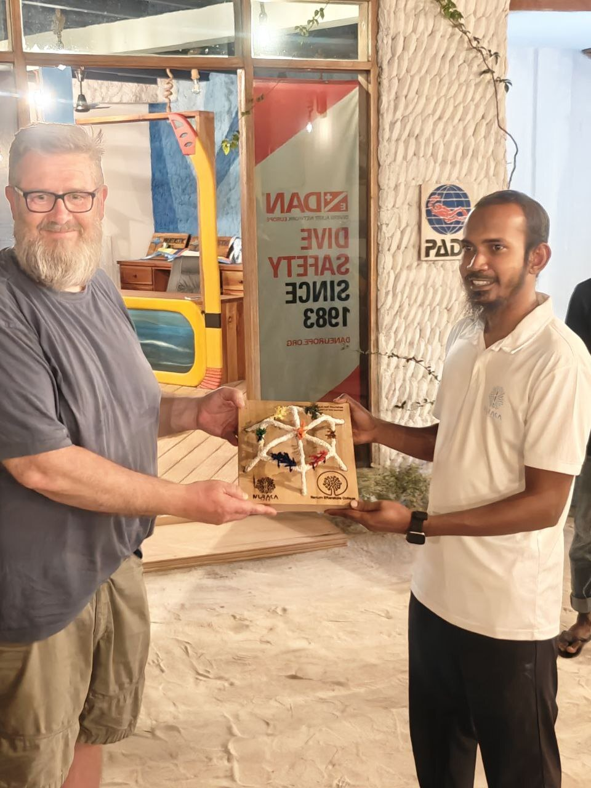
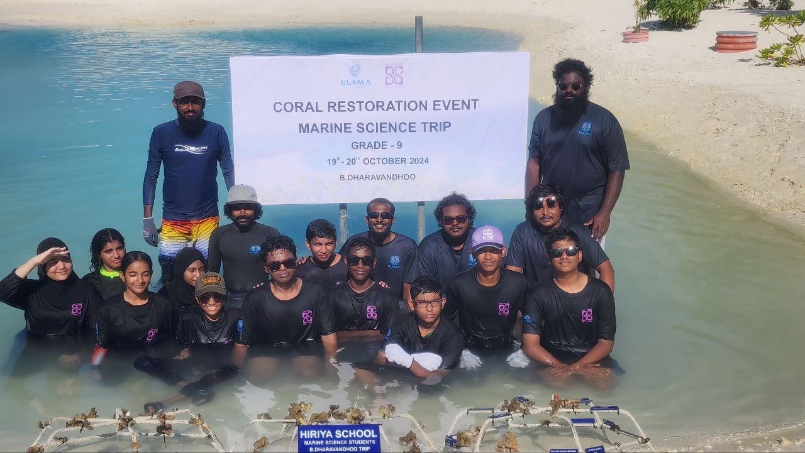
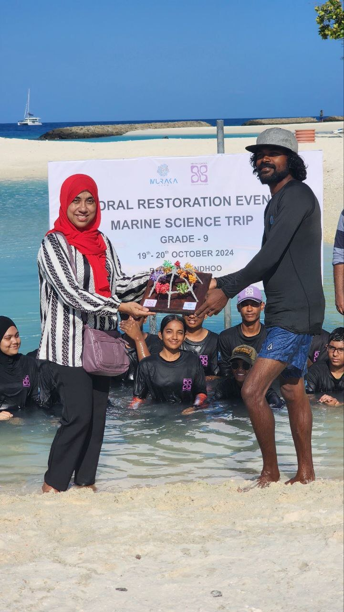
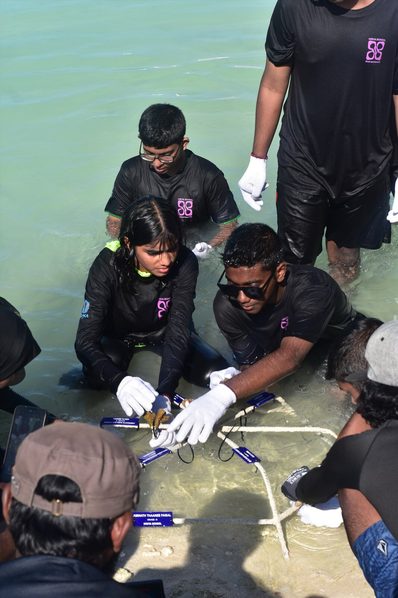

Coral Discovery
An introduction to coral reefs, marine ecosystems, threats and community conservation.
Muraka Farm creates practical marine-conservation learning experiences that connect reef ecology, coral restoration and community stewardship.
Activities depend on programme design, participant age, weather, safety conditions and required permissions.
An introduction to coral reefs, marine ecosystems, threats and community conservation.
Theory, restoration methods, practical demonstrations and selected hands-on activities.
Field-based marine science learning combining reef ecology, restoration, observation and practical conservation activities.
A customised field-learning experience for international schools, colleges and universities visiting Baa Atoll.
From Maldivian schools to international study programmes, Muraka Farm provides opportunities for students to connect marine science and conservation learning with the living reef environment of Dharavandhoo.
Muraka Farm hosted students from Ranum Efterskole College, Denmark, as part of the school's international Coral Restoration programme in Dharavandhoo.
During their field experience, students worked alongside the Muraka Farm team and gained practical exposure to community-led coral reef restoration.
The programme connected classroom learning with hands-on conservation in a living Maldivian reef environment.




Hiriya School × Muraka Farm
Muraka Farm hosted Marine Science students from Hiriya School, Malé, during their study camp in Dharavandhoo, providing students with practical exposure to coral reef conservation and community-led marine restoration.
The field programme introduced students to Muraka Farm's coral restoration work and provided an opportunity to connect classroom-based marine science with practical learning in the reef environment of Baa Atoll.



Baa Atoll School Girl Guides Study Camp
Inspiring young environmental stewards
Muraka Farm hosted Girl Guide students from Baa Atoll School for Coral Quest, an environmental and coral reef study camp in Dharavandhoo combining classroom learning, hands-on conservation and guided marine experience.
The programme took participants on a learning journey from understanding coral reefs in the classroom to experiencing restoration in practice and exploring the marine environment directly.
For Muraka Farm, programmes like Coral Quest are about helping young people move from simply learning about environmental challenges to experiencing how conservation happens in practice.
By combining classroom education, practical restoration and direct reef experience, Coral Quest encouraged participants to build a stronger connection with the marine environment surrounding their islands.
Today's students can become tomorrow's marine scientists, conservationists, community leaders and environmental advocates.